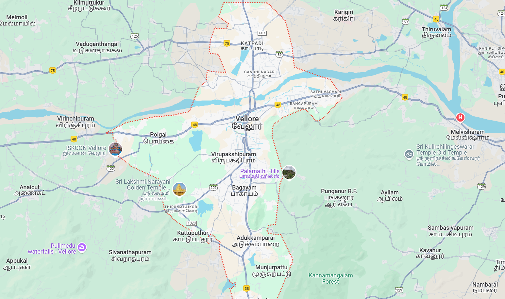
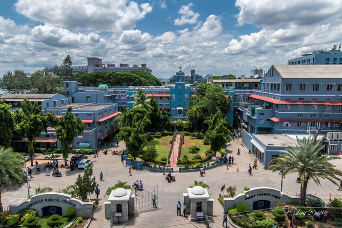
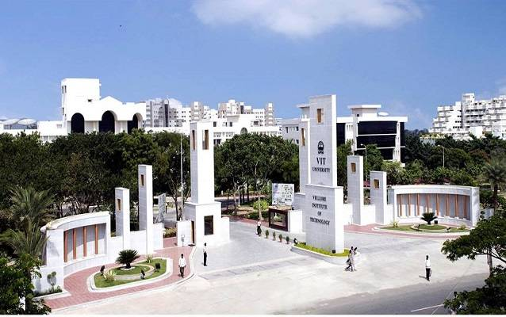

map.html
MyCity
Vellore
RISHI R (212224040277)

Home
"Situated in the state of Tamil Nadu, India"
"It is located on the banks of the Palar River and surrounded by the Javadi Hills in the northeastern part of Tamil Nadu"
Vellore Fort.html
Vellore Fort
 "Vellore Fort is a large 16th-century fort situated in heart of the Vellore city, in the state of Tamil Nadu, India built by the Emperors of Vijayanagara"
"Vellore Fort was built by Chinna Bommi Yadhava Nayak and Thimma Yadhava Nayak, subordinate chieftains under emperor Sadasiva Raya of the Vijayanagara Empire in the year 1566 CE"
CMC.html
"Vellore Fort is a large 16th-century fort situated in heart of the Vellore city, in the state of Tamil Nadu, India built by the Emperors of Vijayanagara"
"Vellore Fort was built by Chinna Bommi Yadhava Nayak and Thimma Yadhava Nayak, subordinate chieftains under emperor Sadasiva Raya of the Vijayanagara Empire in the year 1566 CE"
CMC.html
Christian Medical College

"Christian Medical College Vellore widely known as CMC Vellore is a private Christian minority community-run medical college and hospital in Vellore, Tamil Nadu, India"
"The hospital was founded by Dr. Ida Sophia Scudder in 1900. Ida Scudder was the daughter of second-generation medical missionaries from the Dutch Reformed Church in the United States of America (US) who served in India"
VIT.html
Vellore Institute of Technology

"Vellore Institute of Technology or VIT is a private deemed university in Vellore, Tamil Nadu, India"
"The university has board of management, academic council and Finance committee. G. Viswanathan is the founder-chancellor of VIT and all its sister universities. The campus spans over 372 acres"
GOLDEN TEMPLE.html
Golden Temple
 The temple with its gold (1500 kg) covering, has intricate work done by artisans specialising in temple art using gold
Built by the Sri Narayani Peedam under the guidance of spiritual leader Sri Sakthi Amma, the temple is not just a place of worship but also promotes spiritual education, environmental awareness, and charitable activities.
The temple with its gold (1500 kg) covering, has intricate work done by artisans specialising in temple art using gold
Built by the Sri Narayani Peedam under the guidance of spiritual leader Sri Sakthi Amma, the temple is not just a place of worship but also promotes spiritual education, environmental awareness, and charitable activities.